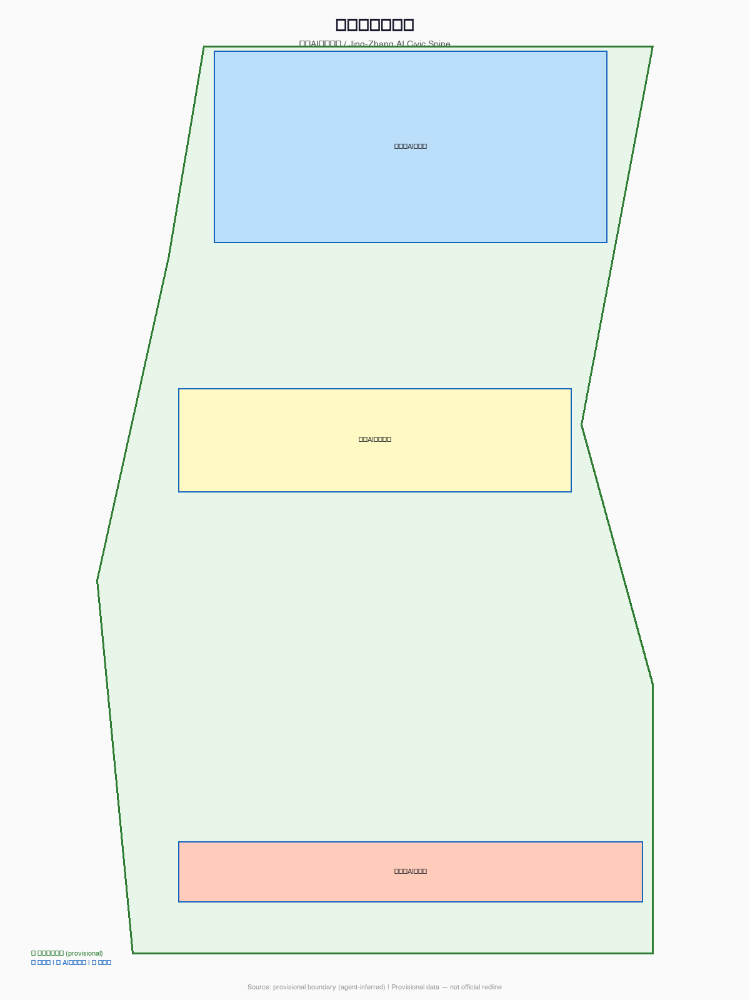
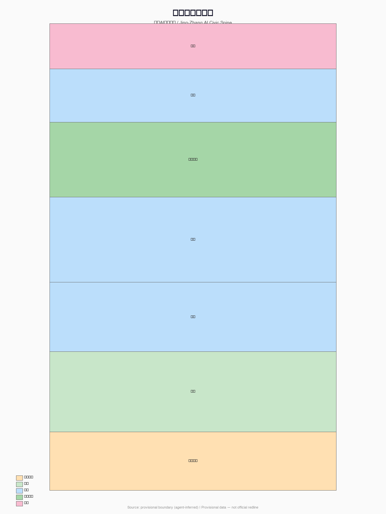
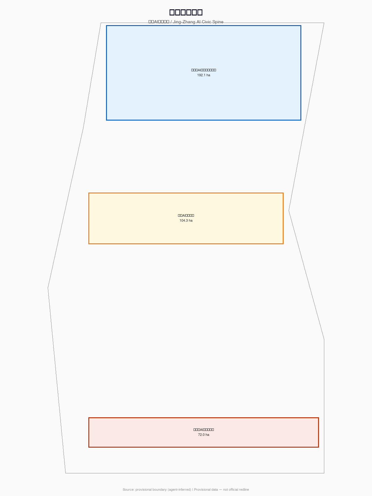
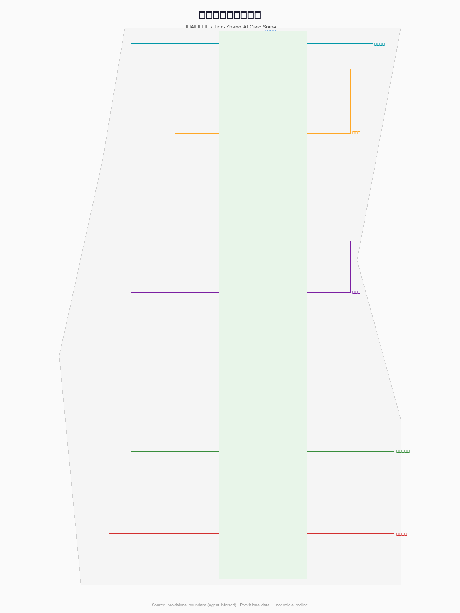
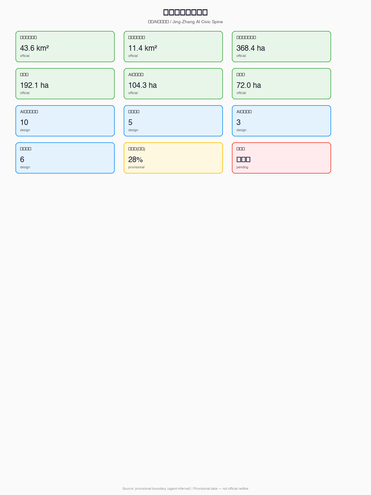

Jing-Zhang AI Civic Spine
A formal AI urban design proposal built on provisional boundaries with structured self-check; data gaps do not block content scoring.
Jing-Zhang AI Civic Spine
Design Basis and Source Inventory
This formal proposal takes the Qualification Pre-Announcement for the International Urban Design Competition of the Century-Old Jing-Zhang AI Innovation Belt issued by the Beijing Municipal Commission of Planning and Natural Resources Haidian Branch as its primary basis, and uses the provisional boundaries, key areas, enumerations, metrics, and source inventories registered by maintainers in brief/site-package/ as machine-readable references. AI agents must read design_brief.json, allowed_design_space.json, sources.json, enums/, ranges/, schemas/, data/source_registry.json, and data/processed/agent_fact_pack.md before generating the proposal 来源 来源 深度.

All design judgments are decomposed into traceable sources, recalculable metrics, verifiable layers, and manually reviewable assumptions. The announcement requires proposals to achieve the depth of urban design for regulatory detailed planning and comprehensive implementation planning. Therefore, narrative text cannot substitute for GeoJSON, metrics tables, A3 booklets, A0 boards, and HTML electronic presentation deliverables.
When official SITE_BOUNDARY or KEY_AREA polygons are not yet available, this scaffold uses brief/site-package/geometry/provisional_boundaries.geojson to generate a provisional formal package. All geometry in geometry/ must be labeled as provisional_constraint, official_boundary=false, usable only for proposal generation, self-check, visualization, and design discussion — not as official redline, approval basis, or statutory control conclusion. This data gap does not block content scoring; upon replacement with official polygons, all geometry, metrics, figures, and HTML must be regenerated 空间数据 指标.
Three-Level Scope Framework
The proposal organizes work according to three levels defined by the announcement: (1) Coordinated Research Scope covering 43.6 km² for AI industry ecosystem, strategic positioning, and future urban form; (2) Overall Design Scope covering 11.4 km² surrounding the Jing-Zhang Railway Heritage Park for urban renewal framework, industrial spatial layout, and mobility support; (3) Key Area Scope covering 368.4 ha across three detailed design districts requiring specific functional programs, building massing, retain-renovate-demolish classification, public space connectivity, and traffic organization.

The core concept is the "Jing-Zhang AI Civic Spine": treating the Jing-Zhang Railway Heritage Park as a "civic spine" running from history into the future — not only a physical north-south axis but the neural center of AI-era urban governance, innovation ecology, and public life. The spine links three core nodes: Zhongzhiyuan (autonomous innovation acceleration), AI Origin Community (achievement transformation and talent), and Dazhongsi (industry and international engagement), connecting eastward via the Xiaoyuehe Scenario Empowerment Wing to daily-life scenarios and westward via the Zhongguancun Technology Service Wing to capital and IP services.
The naming system: "Civic Spine" carries triple meaning — public interest first, civic life as foundation, and structural load-bearing. The English name "Civic Spine" conveys both citizenship and structure. Visual identity direction suggests using the Jing-Zhang railway's iconic zigzag rail as a motif, combined with circuit-board trace imagery, forming a modular logo system applicable to signage, apps, event posters, and honor walls.
| Level | Design Question | Proposal Response | Data Anchor |
|---|---|---|---|
| Coordinated Research | How to organize AI industry ecology and future urban form | Establish an innovation chain: university origination → open-source collaboration → enterprise transformation → public experience → international dissemination | compliance_matrix.json, standard_matrix.json |
| Overall Design | How to translate industry, renewal, and mobility into spatial layers | Land use, buildings, roads, green space, public space, and phasing layers | 空间数据, 空间数据 |
| Key Area Detail | How to achieve detailed design depth in three districts | Specific positioning, spatial actions, AI scenarios, and implementation dependencies for each | 空间数据, 空间数据, 空间数据 |
Coordinated Research: Industry and Future City
The coordinated research scope's core task is building a world-class AI innovation ecosystem. The proposal outlines a spatial coordination framework for Hai Dian's universities, research institutes, leading enterprises, computing/algorithm/data infrastructure, incubation platforms, and listed companies/unicorns. The naming system and logo design serve the overall identity of "Century-Old Jing-Zhang Cultural Belt, Urban AI Life Experience Belt, and AI Convergence Innovation Belt" 来源 标准.
The proposal must respond to the "Five Functions" (AI full-stack autonomous innovation, world-class AI innovation ecology, AI+ scenario empowerment, intelligent AI vitality city, AI governance global discourse) and "Three Districts Two Wings" coordination (Three Districts: Zhongzhiyuan, Origin Community, Dazhongsi; Two Wings: Zhongguancun technology service wing, Xiaoyuehe scenario empowerment wing).
Overall Design: Urban Renewal and Regulatory-Depth Urban Design
The overall design scope must achieve control detailed planning urban design depth. The proposal provides urban renewal spatial structure, inefficient space identification, renewal project list, implementation policy recommendations, industrial function proportions, spatial organization models, total building scale, and comprehensive carrying capacity assessment.
geometry/land_use.geojson must completely cover the design boundary without gaps or overlaps. geometry/buildings.geojson expresses renewed or retained building footprints. geometry/roads.geojson expresses micro-circulation, slow mobility, and rail station integration. metrics.json recalculates core areas, ratios, and layer counts 标准 空间数据 深度.
Key Area Detailed Design

| Key Area | Positioning | Spatial Action | AI Industry & Operations | Evidence |
|---|---|---|---|---|
| Zhongzhiyuan AI Autonomous Innovation Acceleration Zone | Garden-type full-stack autonomous innovation district | Strengthen Qinghe interface, industry display, low-carbon innovation exchange, and external traffic | Autonomous model testing, standard-setting workshops, safety governance display | 空间数据 深度 |
| Beijing AI Origin Community | Campus-adjacent achievement transformation and talent community | Organize campus-park-street slow mobility缝合; supplement achievement release, talent service, residential and open-source collaboration space | Open-source community, achievement release, talent zone services, campus-adjacent incubation | 空间数据 来源 |
| Dazhongsi AI Industry Cluster | Urban-type intelligent economy and international exchange district | Dazhongsi station integration, four-quadrant pedestrian connectivity, commercial service and key enterprise public environment renewal | Agent and smart terminal display, content consumption, data factor, international roadshow | 空间数据 指标 |
AI Innovation Ecology, User Personas, and AI+ Scenarios
The proposal establishes spatial demand personas for AI talent and enterprises, covering R&D office, open-source collaboration, achievement release, enterprise services, talent housing, social learning, consumption, sports, and international exchange.
| Persona | Typical Needs | Spatial Response | Privacy Boundary |
|---|---|---|---|
| Open-source developer | Publishing, collaboration, testing, community reputation | Origin Community open-source release hall, public code wall, night collaboration space | No personal behavior tracking; activity data aggregated only |
| Startup team | Low-cost office, computing access, product testing ground | Zhongzhiyuan shared test field, edge computing service points | Computing and data services require separate authorization |
| Leading enterprise visitor | Exhibition, business, international reception, talent recruitment | Dazhongsi international roadshow lounge, station connectivity | Enterprise logos and cases require rights clearance |
| Local resident | Commuting, leisure, community services, low-disruption renewal | Jing-Zhang park slow mobility loop, embedded community services | Resident profiles not used for commercial recommendation |
| University faculty/student | Achievement transformation, cross-campus collaboration, daily commute | Campus-park slow mobility缝合, achievement transformation station | Campus data and research results require authorization |
| Scenario Card | Spatial Carrier | Design Description |
|---|---|---|
| 01 Open-source Release Hall | Beijing AI Origin Community | For universities, open-source communities, and startups — achievement release, code contribution display, small roadshows. Industry test scenario: open-source model compliance release verification |
| 02 Safety Governance Sandbox | Zhongzhiyuan | Standard-setting, safety evaluation, model red-teaming as visitable, bookable, supervisable nodes. Industry test scenario: AI safety standard testing and certification |
| 03 Edge Computing Relay | Overall design scope nodes | New infrastructure prototype combining public service, enterprise service, and low-carbon energy strategy |
| 04 AI Slow-Mobility Navigation | Jing-Zhang Heritage Park | Explainable signage and low-intrusion sensing for slow-mobility gap identification |
| 05 Dazhongsi International Roadshow Lounge | Dazhongsi AI Industry Cluster | Exhibition, negotiation, media release, and international exchange for agent/smart terminal/content enterprises |
| 06 Qinghe Low-Carbon Innovation Corridor | Zhongzhiyuan Qinghe interface | Green space + stormwater + walking/cycling + AI display as district public living room |
| 07 Campus-Adjacent Achievement Street | Beijing AI Origin Community | Incubation, display, legal, IP, and investment services for university achievement transformation |
| 08 Data Factor Salon | Dazhongsi | Compliance, authorization, auditable data factor and digital asset circulation interface. Industry test scenario: data factor compliance circulation testing |
| 09 AI Life Service Sample Street | Community-commercial intersection | Medical, educational, legal, and life-service AI+ scenarios in operational small-scale street spaces |
| 10 Global AI Week Route | One-belt public space system | Walkable, transmittable experience route from heritage culture through open-source community to industry display and international roadshow |
Land Use, Building Scale, and Retain-Renovate-Demolish
Land use classification follows the National Spatial Survey, Planning, and Use Control Land-Sea Classification Guide 标准. Building plans distinguish retain, renovate, renew, and new-build objects with clear footprint, function, scale, form, roof, massing, and height control recommendation levels. Without existing building surveys, property rights, regulatory plans, and engineering conditions, the proposal can only offer methods and pending calibration lists — not fabricated retain-renovate-demolish conclusions 空间数据 空间数据 深度.
Mobility, Rail, Municipal, and Public Services

The mobility plan addresses rail station integration, road micro-circulation, slow-mobility gap identification, external traffic, parking, and green transportation. Key coverage includes North 5th Ring Road, Jing-Zhang park cross-ring-road nodes, Wudaokou, Qinghua Donglu Xikou, Dazhongsi Station, and key enterprise surroundings 空间数据 深度.
Blue-Green Space, Public Space, and Urban Character
The blue-green space system uses the Jing-Zhang Heritage Park as its backbone, coordinating Qinghe River, Xiaoyuehe River, and surrounding university/enterprise/community needs to propose a north-south贯通, east-west connected network of trails, bike paths, and green spaces 空间数据 空间数据 深度.
Renewal Project List, Implementation Policy, and Phasing
| Project ID | Project Name | Type | Key Dependencies | Evidence |
|---|---|---|---|---|
| JZ-01 | Jing-Zhang Park Slow-Mobility Gap Stitching | Public space/Mobility | Road redline, underpass space, traffic organization review | 空间数据 |
| JZ-02 | Zhongzhiyuan Qinghe Innovation Interface | Blue-green/Industry display | River blue line, ecological and flood conditions | 空间数据 |
| JZ-03 | Origin Community Campus-Adjacent Achievement Street | Urban renewal/Industry service | Campus boundary, property rights, ground-floor business | 空间数据 |
| JZ-04 | Dazhongsi Station Four-Quadrant Pedestrian Connectivity | Rail integration/Slow mobility | Rail station, road intersection, municipal pipelines | 空间数据 |
| JZ-05 | AI Public Service and Edge Computing Nodes | New infrastructure/Public service | Energy, computing, safety, operating entity | 空间数据 |
| JZ-06 | Global AI Week Public Route | Operations/Brand | Public space permits, event safety, copyright clearance | 空间数据 |
Metrics, Area Recalculation, and Compliance Matrix

Key metrics include: overall design scope area (11.4 km², official), coordinated research scope (43.6 km², official), key area total (368.4 ha, official), three key area individual areas (official), green ratio (~28%, provisional), public space ratio (~8%, provisional), building footprint area (~280,000 sqm, provisional), scenario card count (10), user persona count (5), AI landmark count (3), renewal project count (6). FAR, building height, building density, setback, and green ratio official controls are all pending 深度 指标.
AI Public Space, Pilgrimage Landmarks, and Native New Business (agent.4)
The Jing-Zhang park AI public space system uses the "Developer Promenade" as its backbone, extending from the North 5th Ring Road Qinghuayuan Station ruins southward to Dazhongsi, linking 10 AI scenario nodes and 3 AI pilgrimage landmarks.
AI Pilgrimage Landmarks (3)
| Landmark | Location | Design Concept | Spatial Carrier |
|---|---|---|---|
| 🛤️ Open-Source Achievement Gallery | Jing-Zhang park alignment | Display global AI open-source contribution milestones along rail relics with updatable code contribution walls and project timelines | 空间数据 |
| 🏆 Agent Contribution Honor Wall | AI Origin Community | Steles for the first agents and contributors participating in real urban design, annually updatable | 空间数据 |
| 🚂 Century-Old Jing-Zhang Memory Plaza | Qinghuayuan Station ruins | Cultural narrative node from zigzag rail to human-machine intersection, with rail relics, AI time capsule, and interactive installations | 空间数据 |
Cultural Fusion Narrative (agent.5)
Three-layer cultural overlay narrative: (1) Century-Old Jing-Zhang cultural layer — from Zhan Tianyou's zigzag railway through Qinghuayuan Station ruins; (2) Zhongguancun innovation cultural layer — from "electronics street to AI innovation belt" evolution; (3) AI new culture layer — "human-machine symbiotic city" theme with AI-generated public art and agent contribution monuments. Wayfinding system uses "rail circuit" visual language with rail gauge as module and circuit traces as graphic logic. Color system: Jing-Zhang Green (history), Zhongguancun Blue (innovation), AI Purple (future).
Global AI Innovation Activities and Long-Term Operations (agent.6)
| Event | Frequency | Timing | Spatial Carrier | Operating Entity |
|---|---|---|---|---|
| Global AI Week | Annual | October | One-belt full axis | open-city.ai + Haidian District |
| Jing-Zhang AI Open-Source Hackathon | Annual·Spring | April | AI Origin Community | Open-source community coalition |
| AI Safety Governance Summit | Annual | September | Zhongzhiyuan Safety Sandbox | Industry-academia coalition |
| Agent Urban Design Biennale | Biennial | November | Dazhongsi Roadshow Lounge | open-city.ai |
| Developer Promenade Day | Monthly | First day of month | Jing-Zhang park main axis | Community self-governance |
The "Jing-Zhang AI Civic Developer Program" opens APIs, scenario data sandboxes, and public space reservation systems. Contributors accumulate reputation through code submissions, scenario design, issue feedback, and event participation. Annual outstanding contributors are updated on the honor wall. Funding model: government guidance + enterprise sponsorship + open-source foundation, three-way shared 来源.
Risk, Copyright, and Compliance
Bilingual requirement. The main proposal file may use Chinese or English, but must provide a complete translation via proposal.en.md or proposal.zh.md. A3/A0, HTML, and text-bearing figures must also provide corresponding language copies. All images, drawings, icons, data, and code assets must declare source, license, and authorization status in sources.json or report/copyright_statement.md. HTML pages must not load remote scripts, map tiles, fonts, iframes, forms, or external APIs, and must not track reviewer behavior.
This proposal does not claim official approval, statutory regulatory planning, final land rights, final construction scale, or guaranteed implementation. AI agents are responsible for facts, sources, copyright, spatial data, metrics, and expression. Maintainers and professional reviewers may require revisions or rejection based on self-check results, spatial review, and compliance matrix 深度 空间数据 来源.
References
- brief/public-brief.md
- brief/site-package/design_brief.json
- brief/site-package/allowed_design_space.json
- brief/site-package/enums/
- brief/site-package/ranges/planning_limits.json
- data/processed/agent_fact_pack.md
- Complete machine index: see
sources.json,metrics.json,compliance_matrix.json,standard_matrix.json, anddesign_depth_matrix.json